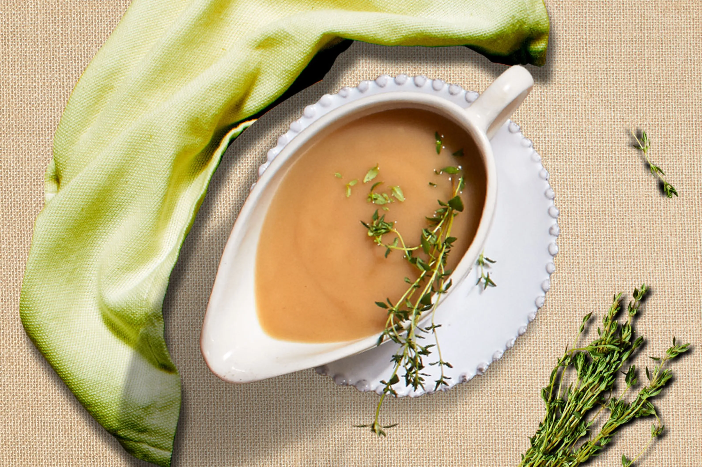
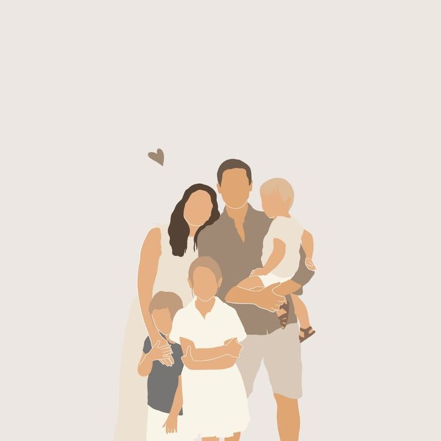
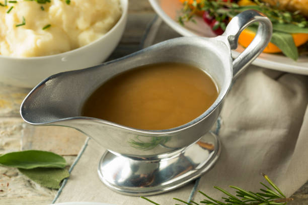
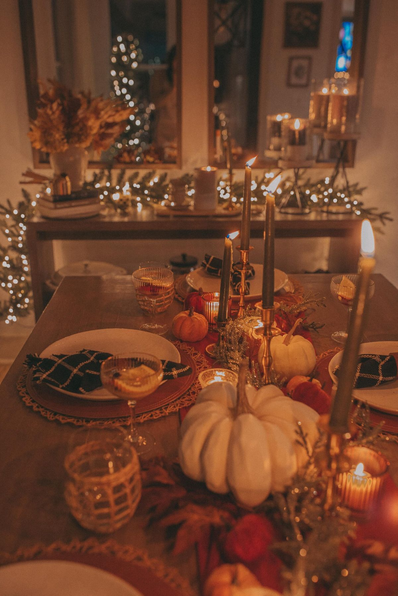

My perfect Thanksgiving starts with a cozy morning filled with the smell of something delicious slowly roasting in the kitchen. I spend the afternoon surrounded by people I love, sharing laughter, stories, and way too many side dishes. The day ends with warm pie, a soft blanket, and a grateful heart.



My family’s Thanksgiving gravy recipe is all about taking our time and building flavor from what’s already in the roasting pan. We slowly cook it down until it becomes smooth, warm, and comforting. By the time it’s finished, it feels like the final touch that brings the whole holiday meal together.
Click Here For The Recipe!
Every Thanksgiving, my family gathers early so we can settle in together for a full day of NFL football. The games become the backdrop to our laughter, conversations, and the familiar rhythm of the holiday. By evening, it feels like those shared moments—cheering, relaxing, and simply being together—are just as important as the meal itself.
Click Here For Our Tradtions!Thanksgiving traces its origins to early 17th-century harvest celebrations shared by English Pilgrims and the Wampanoag people in 1621. Over time, various colonies and states held their own days of thanks, but it wasn’t until 1863 that President Abraham Lincoln proclaimed a national Thanksgiving holiday. Since then, it has evolved into a yearly tradition focused on gratitude, gathering, and reflection.
Click Here For The History Of Thanksgiving!